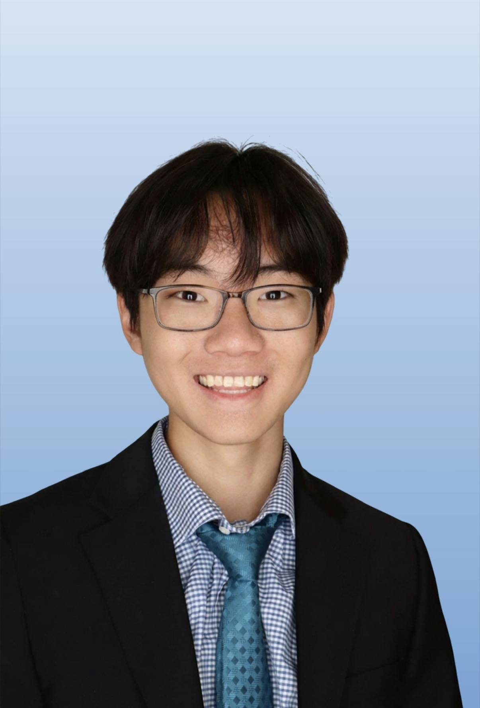

"If you bring that kind of enthusiasm to your work, it feels like play."
- Robert Lefkowitz

"Nobody ever figures out what life is all about, and it doesn't matter. Explore the world. Nearly everything is really interesting if you go into it deeply enough."
- Richard Feynman
Consistent with Feynman's advice to explore deeply, the question arises: how much can we really know about life? During high school in my hometown of Devon, Pennsylvania, I was introduced to a series of lenses through which to view the natural world: biology, mathematics, philosophy, chemistry, physics. Each one of these lenses proffered their own methodologies for explaining how the world works, yet all of them claimed to describe the same shared reality.
For example, consider cell division. We file it under biology, since it's how one parent cell becomes two, and at the same time, it is driven molecularly by hydrogen bonds between DNA base pairs that belong to chemistry. The protons in these bonds are themselves governed by quantum tunneling, described by physics, occasionally slipping into positions that cause nitrogenous bases to spontaneously mutate (Wang et al. 2011). Even further, differential equations in mathematics, through the Schrödinger equation, can model how likely this proton tunneling is to trigger the tautomeric shifts that lead to mutations:
\[ i\hbar \frac{\partial}{\partial t}\Psi(x,t) = \left[-\frac{\hbar^2}{2m}\frac{\partial^2}{\partial x^2} + V(x,t)\right]\Psi(x,t) \]
Following a single process downward, the boundaries between subjects begin to dissolve. What looks like a natural division of knowledge may instead reflect how the mind divides it.
My IDST will investigate the neuroscientific and mathematical underpinnings of how the human brain forms categories of information, and how we reflect on and regulate that process, known as metacognition. However, the brain is staggeringly complex. Within a single second, trillions upon trillions of molecular interactions unfold across its roughly 86 billion neurons. For this reason, my IDST will also explore the anthropological dimension of cognition: how purely mechanistic interactions have evolved to give rise to subjective consciousness.
These questions are what draw me to medicine. Medicine, I realized, divides the soma much like academia divides knowledge, into specialties such as cardiology, neurology, and oncology, even though every patient is one connected system. Medical diagnostics, itself, is an act of categorization. Physicians take a set of symptoms and categorize them into a disease. When categorization goes wrong, often because of overconfidence or mental shortcuts, patients are harmed. As such, metacognition, the ability to recognize what we don't know and when to question our first impression, may be one of the most important skills a physician can have. My passion for neurobiology and mathematics has motivated me to become a physician-scientist specializing in computational neuropathology.
I am a student at the University of North Carolina at Chapel Hill, majoring in biology and mathematics. My interdisciplinary (IDST) major will use the intersection of neuroscience, mathematics, and anthropology to study cognitive categorization and metacognition.
Email: chrisong@ad.unc.edu
LinkedIn: Christopher's linkedin